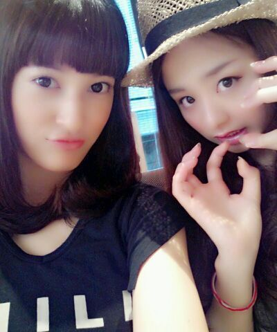

| 2013/11 13 Wed | ゆきな せっちゃん今まで ありがとう！卒業おめでとう(⌒ ‐⌒) ろってぃ- |
はいっ！ こんにちわあ☆
ろってぃーだよ〜＼(^o^)／
昨日のblog文字 おっきくなってたんでしょ？
ごめんねぇぇ
アップデートしたら設定が変わってしまい
普通の大きさで打ったら 皆には大きくなってたみたいで
今皆は 普通の文字の大きさになってるよね？
なので今まひろは めっちゃ小さい文字で打ってるとゆーことです(´；ω；`)ぁは
改 行をどこでしたらいい 分かんない状況 笑
うぎうぎっ♪
せっちゃんが名付けた。まろせらと...
『まろせらコンビ』
そう、昨日 発表がありました。
乃木坂46の 柏幸奈 宮澤成良が卒業します！
まず最初に 二人とも 大好きです！
ゆきなは 可愛い！
せっちゃんは 美人！
ゆきなは 可愛いとギャップに面白いとこある！
せっちゃんは あんな美人な顔して なかなか天然。
つっこみどころたくさん*^^*
ゆきなは学業に専念する
せっちゃんは 夢に向かって行きたいということです.
2人とも前向きな卒業です！
だから まひろは 二人のことを本当に応援しています.
卒業をすること、
まひろにだけは先言っておきたい。って
せっちゃんから言われて 知っていました。
でも 嫌だなぁ 寂しいなぁ。とは思わなかったです！
せっちゃんとは もうここ何百日って
毎日のように ずっとメールのやりとりをしてて
カフェりながらいつも
お互いの夢を語り合って
『 あーなりたいね、こーなりたいね』って妄想して夢描いてたから せっちゃんが本気なのも知っています！
『絶対に 夢叶えようね！』っていつも約束してました.
もちろん 今日も済みです^^
だから せっちゃんには その夢を叶えてもらわんと
まひろは、困る^^！ 約束したから.
そんな甘い世界じゃないってのは分かってるから
楽しみな反面 不安もいっぱいあると思います.
でも自分で決めた事だから悔いはない...って
言っていました^^
だから 皆さん、
せっちゃんが また皆さんの前に登場するのを
一緒に 応援しましょ*^^*
皆さんから何か伝えたいことがあったら
いつでも何でも言ってください*^^*
高２の冬☆しゃんしゃんしゃん*゜*・゜

これは 高２の夏 .

本当 ずっと一緒にいるよ*^^*
ゆきな、せっちゃん 今まで一緒に
色んな壁を 乗り越えてきたね.
ありがとう.
これからも 自分の道を 突き進んでってね！
卒業 おめでとう！！
Rotty☆...
コメント(167)
2013/11/13 18:30